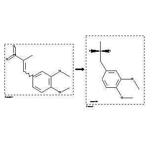

 |
| FA | RX(1); FLST(1); RX(1) |
Reaction (1 of 1)
| Reaction ID | 147554 |
| Reactant BRN | 1471169 |
| Reactant | 1,2-dimethoxy-4-(2-nitro-propenyl)-benzene |
| Product BRN | 3200538 |
| Product | (+-)-2-(3,4-dimethoxy-phenyl)-1-methyl-ethylamine |
| No. of Reaction Details | 1 |
Reaction Details (1 of 1)
| Reaction Classification | Preparation |
| Reagent | LiAlH4; diethyl ether |
| Comment | Handbook |
| Citation Pointer | 1085090; Journal; Bu'Lock; Harley-Mason; JCSOA9; J.Chem.Soc.; 1951; 2248, 2252;2019332; Journal; Moed et al.; RTCPA3; Recl.Trav.Chim.Pays-Bas; 77; 1958; 273,278; |
Reference (1 of 2)
| Citation Number | 1085090 |
| Document Type | Journal |
| Authors | Bu'Lock; Harley-Mason |
| CODEN | JCSOA9 |
| Journal Title | J.Chem.Soc. |
| Publication Year | 1951 |
| Page | 2248, 2252 |
Reference (2 of 2)
| Citation Number | 2019332 |
| Document Type | Journal |
| Authors | Moed et al. |
| CODEN | RTCPA3 |
| Journal Title | Recl.Trav.Chim.Pays-Bas |
| (Series) Volume | 77 |
| Publication Year | 1958 |
| Page | 273,278 |